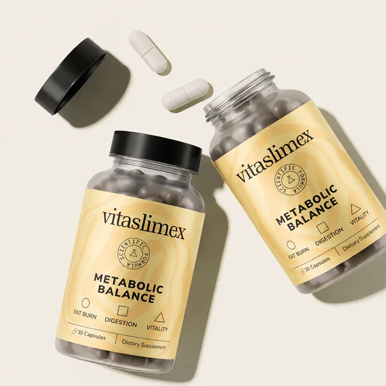

Vitaslimex Erfahrungen: die Stoffwechsel-Kapsel für dauerhafte Ergebnisse
Kein Pulver zum Anrühren, kein Plan zum Abhaken, keine dreimal täglich Tabletten. Eine Kapsel am Morgen, ein Glas Wasser – und eine Rezeptur aus 11 natürlichen Inhaltsstoffen, die dort ansetzt, wo Diäten meist scheitern: beim Heißhunger, beim trägen Stoffwechsel und beim aufgeblähten Bauch.

Was ist Vitaslimex genau?
Vitaslimex Metabolic Balance ist ein Nahrungsergänzungsmittel in Kapselform. Statt auf eine einzelne „Wunderzutat“ zu setzen, verbindet die Rezeptur 11 Inhaltsstoffe aus natürlichen Quellen – jeder mit einer klaren Aufgabe für Blutzucker, Stoffwechsel oder Verdauung.
Eine Kapsel am Tag ist das ganze Programm. Gedacht für Erwachsene, die ihren Stoffwechsel jeden Tag unterstützen wollen, ohne ihren Alltag umzubauen. Vitaslimex ist kein Arzneimittel und ersetzt keine ausgewogene Ernährung – es macht es leichter, sie durchzuhalten.
Elf Inhaltsstoffe, ein Ziel
Grüntee, Apfelessig, Berberin, Ginseng und Co. – zusammen setzen sie an Heißhunger, Fettverbrennung und Verdauung gleichzeitig an.
Chrom mit anerkanntem Nutzen
Chrom gehört zu den Nährstoffen, deren Rolle für den Stoffwechsel und den Blutzuckerspiegel offiziell anerkannt ist – mit einer zugelassenen Gesundheitsangabe der EU.
Energie ohne aggressive Stimulanzien
Keine Koffein-Booster wie in klassischen Fatburnern: Ginseng und Grüntee sorgen für Energie, die trägt – ohne Hoch am Vormittag und Tief am Nachmittag.
Vitaslimex im Alltag: das bringt die Kapsel
Vitaslimex arbeitet mit Ihrem Körper statt gegen ihn: Es unterstützt den Stoffwechsel, zügelt Heißhungerattacken, gleicht den Blutzucker aus und hilft der Verdauung – für Fortschritte, die bleiben.
Stabiler Blutzucker, weniger Heißhunger
Chrom trägt zu einem normalen Stoffwechsel von Makronährstoffen und zur Aufrechterhaltung eines normalen Blutzuckerspiegels bei. Berberin, Ginseng und Resveratrol ergänzen das – der Griff zur Süßigkeit wird seltener.
Zugelassene EU-AngabeMehr Energie, weniger Müdigkeit
Koreanischer Ginseng und Grüntee-Extrakt helfen gegen Müdigkeit, unterstützen die Durchblutung und reduzieren oxidativen Stress – für Vitalität über den ganzen Tag.
Aktiver Stoffwechsel
Grüntee, Cayennepfeffer und Bitterorange arbeiten zusammen: Sie unterstützen die Thermogenese und eine effizientere Fettverbrennung.
Leichter Bauch
Ingwerwurzel, Apfelessig und Zimt beruhigen den Magen, fördern die Verdauung und reduzieren Blähungen – für ein angenehmes Gefühl nach dem Essen.
Wann lohnt sich eine Kur mit Vitaslimex?
Meist sind es ganz alltägliche Signale, die den Ausschlag geben. Erkennen Sie sich wieder?
Der Nachmittag zieht Ihnen den Stecker. Termine, Wege, Familie – und um vier Uhr ist die Energie weg. Ginseng und Grüntee helfen, Müdigkeit zu überwinden, ohne den Absturz, den man von Koffein-Shots kennt.
Die Waage bewegt sich kaum noch. Was früher von allein lief, funktioniert heute nicht mehr. Vitaslimex setzt am Stoffwechsel an und unterstützt eine effizientere Fettverbrennung.
Der Heißhunger gewinnt jeden Abend. Sackt der Blutzucker ab, ruft die Schokolade. Chrom, Berberin und Ginseng halten den Blutzucker im Gleichgewicht – das Verlangen nach Süßem wird leiser.
Ihr Bauch ist oft aufgebläht. Völlegefühl und träge Verdauung nach dem Essen? Ingwer, Apfelessig und Zimt sorgen für ein spürbar leichteres Bauchgefühl.
Strenge Diäten haben Sie schon abgebrochen. Pläne mit Verboten halten selten länger als zwei Wochen. Eine Monatskur mit Vitaslimex ist ein klarer, machbarer Rahmen – und lässt sich jederzeit verlängern.
Sie wollen es einfach haben. Eine Kapsel, ein Glas Wasser. Nichts abwiegen, nichts vorbereiten, nichts zählen – je einfacher die Routine, desto eher bleibt man dran.
Eine natürliche Rezeptur – jede Menge offen auf dem Etikett
Zehn Pflanzenstoffe und Chrom, sonst nichts. Alle Mengen beziehen sich auf eine Kapsel – die volle Tagesdosis, kein versteckter „Komplex“ ohne Zahlen.
Ausgewählte Pflanzenstoffe
Mikronährstoff
Was nicht in Vitaslimex steckt
Die Rezeptur verzichtet bewusst auf alles, was nur auf dem Etikett beeindrucken soll.
So nehmen Sie Vitaslimex ein
Die einfachste Routine, die es gibt – denn nur eine Gewohnheit, die man auch durchhält, bringt etwas.
Eine Kapsel am Tag
Mit einem großen Glas Wasser, am besten morgens zu einer Mahlzeit. So bleibt der Magen entspannt.
An einen festen Moment knüpfen
Eine Flasche, 30 Kapseln, ein Monat. Am leichtesten klappt es zusammen mit dem Frühstück oder dem ersten Kaffee. Einmal vergessen? Am nächsten Tag normal weitermachen – nicht doppelt nehmen.
Dranbleiben
Geben Sie der Kur mindestens einen vollen Monat, bevor Sie urteilen. Viele Kunden setzen gleich auf drei Monate – dafür ist das 3er-Paket gemacht.
Hergestellt in der Europäischen Union
Vitaslimex wird in einer Fertigungsstätte in der EU produziert. Die Inhaltsstoffe stammen aus natürlichen Quellen, und jede Kapsel wird so hergestellt, dass Reinheit und Wirksamkeit gewährleistet sind – ohne schädliche Zusatzstoffe.
Bestellt wird über einen SSL-gesicherten Checkout, geliefert wird kostenlos und schnell, und der Kundenservice ist rund um die Uhr erreichbar.

Was Vitaslimex von anderen Abnehmkapseln unterscheidet
Im Regal stehen Dutzende Stoffwechsel-Produkte, die sich zum Verwechseln ähneln. Vier Punkte machen den Unterschied.
Vitaslimex Erfahrungen von Kunden
Was Kunden zuerst bemerken, ist selten die Waage – sondern der Alltag: mehr Energie, weniger Heißhunger, ein leichterer Bauch. Die Fortschritte an der Figur folgen.
„Ich fühle mich energiegeladen und selbstbewusst!“
„Vitaslimex hat mir nach all den Jahren endlich das Gefühl gegeben, wirklich Fortschritte zu machen.“
„Ich liebe, wie natürlich sich Vitaslimex anfühlt – ganz ohne Nebenwirkungen!“
„Vitaslimex hat meine Gesundheit und mein Leben verändert – und es geht weiter!“
„Ich fühle mich nicht mehr aufgebläht oder träge. Vitaslimex hat meinen Stoffwechsel verändert!“
„Vitaslimex ist die beste Entscheidung, die ich dieses Jahr getroffen habe – mein Abnehmziel scheint endlich erreichbar.“
Häufige Fragen zu Vitaslimex
Die Antworten auf die Fragen, die vor dem Start am häufigsten gestellt werden.
Wie nimmt man Vitaslimex ein?
Eine Kapsel täglich mit einem großen Glas Wasser, am besten morgens zu einer Mahlzeit.
Was, wenn ich eine Kapsel vergessen habe?
Am nächsten Tag ganz normal weitermachen. Die Dosis nicht verdoppeln, um es nachzuholen.
Muss ich meine Ernährung umstellen?
Nein, einen Diätplan braucht es nicht. Vitaslimex ergänzt eine ausgewogene Ernährung – wer dazu normal und abwechslungsreich isst und sich bewegt, holt am meisten aus der Kur heraus.
Wann merke ich etwas?
Laut Hersteller fühlen sich viele schon nach wenigen Tagen energiegeladener. Weniger Heißhunger und ein leichterer Bauch folgen in den ersten Wochen – beurteilen sollte man die Kur nach einem vollen Monat.
Wie lange sollte man Vitaslimex nehmen?
Eine Flasche mit 30 Kapseln reicht genau einen Monat. Die meisten Kunden wählen gleich das 3er-Paket für drei Monate – im 3er-Paket ist Vitaslimex deutlich günstiger.
Enthält Vitaslimex Koffein oder Stimulanzien?
Zugesetzte Koffein-Booster oder aggressive Stimulanzien enthält Vitaslimex nicht. Das wenige natürliche Koffein stammt aus dem Grüntee-Extrakt – ohne Energie-Peak und ohne Absturz am Nachmittag.
Gibt es Vitaslimex bei dm, Rossmann, in der Apotheke oder bei Amazon?
Nein. Vitaslimex wird über den offiziellen Shop verkauft – nur dort gibt es das Original mit kostenlosem Versand und 30-Tage-Geld-zurück-Garantie.
Was kostet Vitaslimex?
Die aktuellen Preise und Aktionsrabatte sehen Sie im offiziellen Shop; im 3er-Paket ist Vitaslimex deutlich günstiger. Auf Wunsch zahlen Sie mit Klarna erst in 30 Tagen.
Wie funktioniert die Geld-zurück-Garantie?
Sie haben 30 Tage Zeit, Vitaslimex auszuprobieren. Sind Sie nicht zufrieden, bekommen Sie Ihr Geld zurück.
Hat Vitaslimex Nebenwirkungen?
Vitaslimex setzt auf natürliche Inhaltsstoffe ohne aggressive Stimulanzien. Wie bei jedem Nahrungsergänzungsmittel kann der Magen anfangs empfindlich reagieren – die Einnahme zu einer Mahlzeit beugt dem vor.
Medikamente, Schwangerschaft, Stillzeit – geht das?
In diesen Fällen vor der Einnahme mit dem Arzt sprechen. Für Schwangere, Stillende und Personen unter 18 Jahren wird Vitaslimex nicht empfohlen.
Wo wird Vitaslimex hergestellt?
In einer Fertigungsstätte in der Europäischen Union – mit Inhaltsstoffen aus natürlichen Quellen und ohne schädliche Zusatzstoffe.
Wie bewahre ich die Flasche auf?
Gut verschlossen, trocken, vor Wärme und direktem Licht geschützt und außerhalb der Reichweite von Kindern.
Bereit, Ihre Routine zu starten?
Eine Flasche, 30 Kapseln, 30 Tage – eine einfache Gewohnheit, die endlich nichts Unmögliches von Ihnen verlangt.
Vitaslimex bestellen